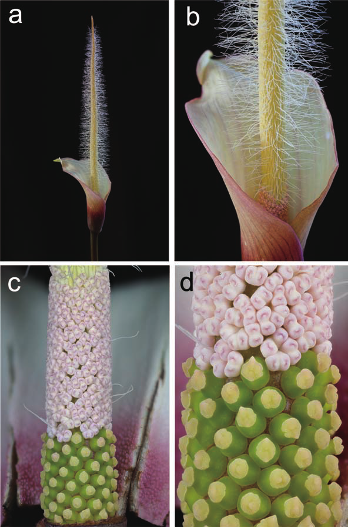

Amorphophallus natolii (Araceae), a new species from limestone on Palawan, Philippines
Abstract
Full text
Full text is available as a scanned copy of the original print version.
Get a printable copy (PDF file) of the
complete article, or click on a page image below to browse page by page.
Links are also available for
Selected References.
Images in this article

Plate 1 1a: Amorphophallus natolii: habit of spathe and spadix; 1b: Amorphophallus natolii: spathe and lower part of spadix in detail; 1c: Amorphophallus natolii: lower part of spadix, showing female (below) and male zone (above), the latter with a few hairlike stamin- odes; 1d: Amorphophallus natolii: female zone (detail) showing shape of the pistils. All photographs by Andreas Wistuba.
Figure 1 The Continental Asia-I clade of Amorphophallus, showing in colour all species with hairs on the appendix. Solid arrows: the species with the appendix densely covered with staminodes. open arrow: the one species with always loosely set staminodes on the appendix (A. cirrifer). dotted branches: the species with occasionally staminodes on the appendix.